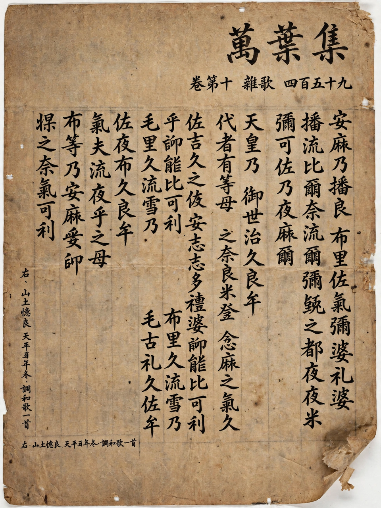

The Man'yōshū (Japanese: 万葉集, "Collection of Ten Thousand Leaves") is the oldest extant anthology of Japanese poetry (waka). Compiled sometime after AD 759, the last datable poem in the collection, it contains more than 4,500 poems in twenty books, composed over a span of roughly four centuries by emperors, courtiers, soldiers, peasants, and frontier guards. The poems are written in man'yōgana, an early system using Chinese characters for their sounds to write Japanese. The anthology's name lent the word Man'yō to Japan's Reiwa era, whose name was drawn from a famous Man'yōshū poem about plum blossoms.
| Man'yōshū | |
|---|---|
 Manuscript page of the Man'yōshū | |
| Language | Old Japanese (written in man'yōgana) |
| Compiled | After AD 759 (Nara period) |
| Contents | 20 books; over 4,500 poems |
| Principal compiler | Traditionally Ōtomo no Yakamochi (attributed) |
| Major poets | Kakinomoto no Hitomaro, Yamanoue no Okura, Ōtomo no Tabito, Ōtomo no Yakamochi |
Unlike the later imperial anthologies commissioned by emperors, the Man'yōshū's exact origins are obscure; it was probably assembled in stages from earlier court and private collections, with the poet-statesman Ōtomo no Yakamochi — himself one of its most represented poets — often credited as a principal compiler. The twenty books organize poems into categories such as zōka (miscellaneous poems), sōmon (exchanges of verse, often love poems), and banka (elegies), and include poems on set topics composed for court occasions as well as folk songs from the eastern provinces (Azuma-uta) and frontier-guard poems (sakimori no uta).
Most poems are tanka ("short poems") of 5-7-5-7-7 syllables (onji). The collection is also the great repository of the longer chōka ("long poem") form — alternating 5- and 7-syllable lines ending in 7-7, usually followed by one or more tanka "envoys" (hanka) — which Kakinomoto no Hitomaro raised to ceremonial grandeur. A smaller number of sedōka (5-7-7-5-7-7) also survive. After the Man'yōshū, the chōka largely died out and the tanka became the dominant form of Japanese verse for a millennium.
Kakinomoto no Hitomaro, honored later as a saint of poetry, composed powerful elegies and praise poems for the late seventh-century court. Yamanoue no Okura wrote socially conscious verse, including a dialogue of impoverished commoners and laments for his dead son. Ōtomo no Tabito celebrated wine and exile in Kyushu; his plum-blossom banquet poems supplied the name of the Reiwa era in 2019. Emperor and empress, princess-poets such as Nukata no Ōkimi, anonymous frontier guards, and beggars all speak in the anthology, giving it a social breadth unmatched by the courtly later collections.
Written before the invention of the kana syllabaries, the Man'yōshū preserves Old Japanese phonology through the man'yōgana logographic-phonetic script, making it an invaluable source for historical linguistics. Its directness and emotional frankness have been prized by generations of readers; in the Edo period the scholar Keichū's philological work revived its study, and Motoori Norinaga championed its spirit. It stands at the head of the Japanese poetic tradition, preceding the more courtly Kokin Wakashū.
From Wikipedia, the free encyclopedia (recreated from memory).